目标检测
重要算法模型

必备模型
一个完整的目标检测网络主要由三部分构成：detector=backbone+neck+head
新的监测网络使用 Transformer ，如： Detection Transformer
RetinaNet
resent senet frp， rpn， nms， roi align ， sppnet， rcnn系列， yolov系列， ssd系列
Single Shot MultiBox Detector (SSD)
https://zhuanlan.zhihu.com/p/33544892 https://github.com/xiaohu2015/DeepLearning_tutorials/tree/master/ObjectDetections/SSD
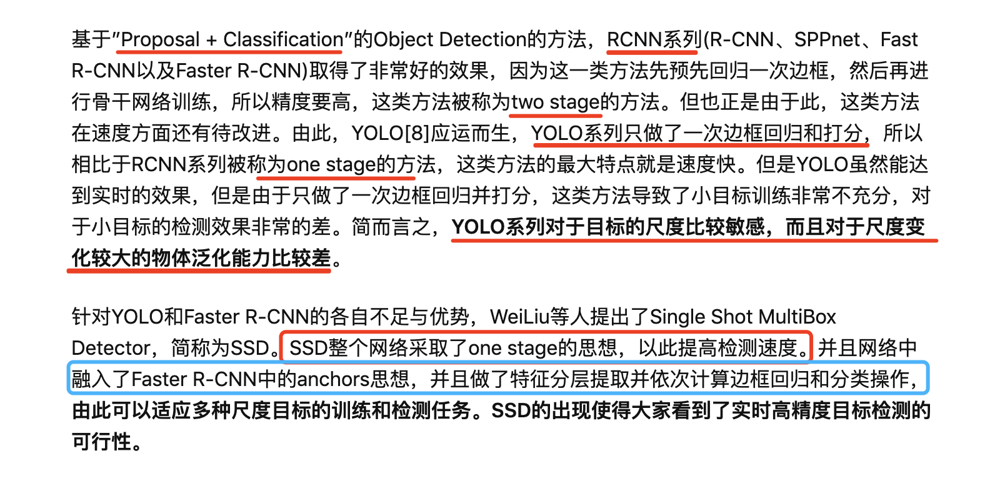
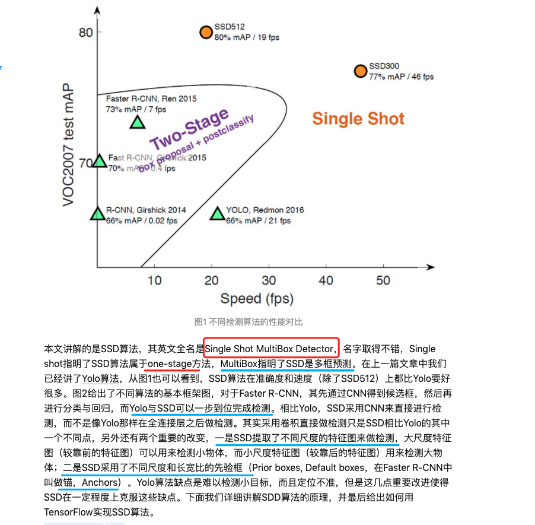
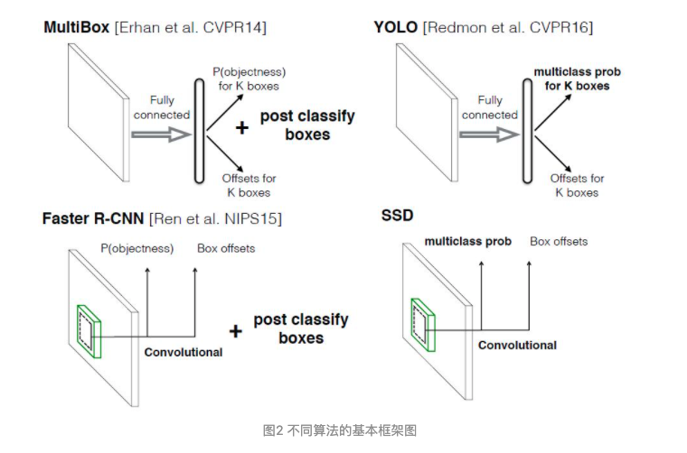
 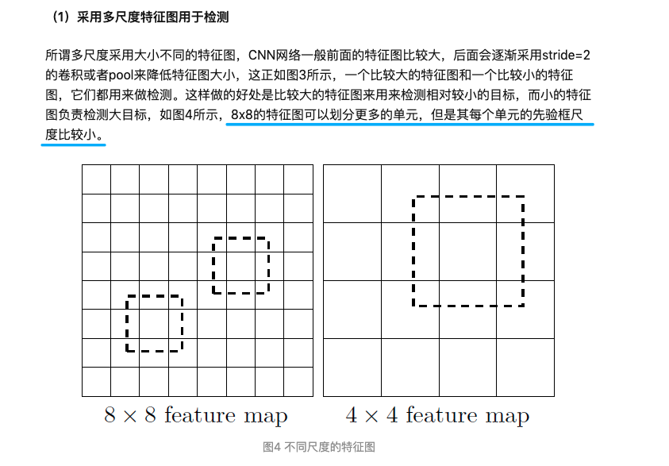
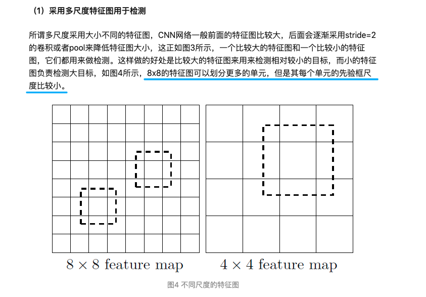
 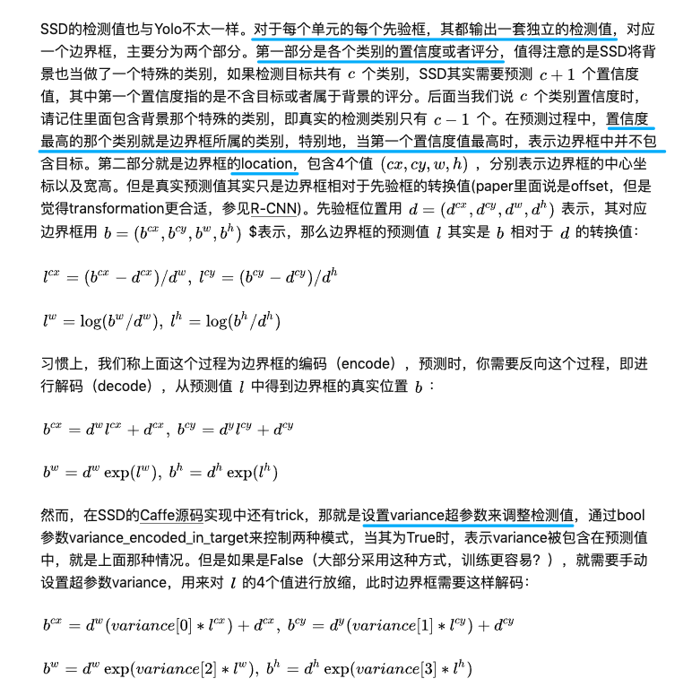
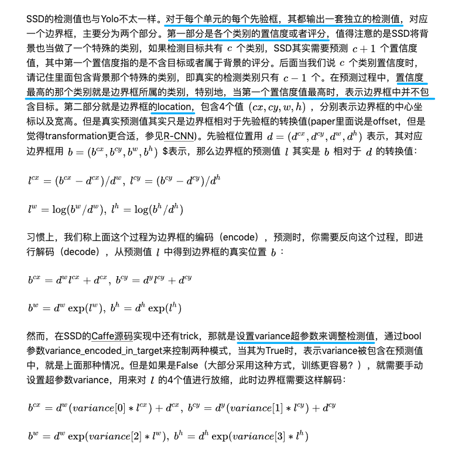
 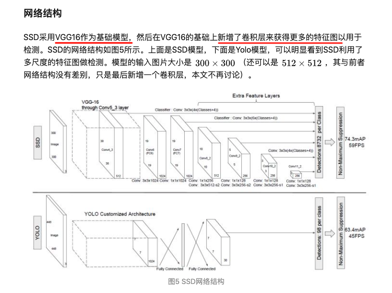
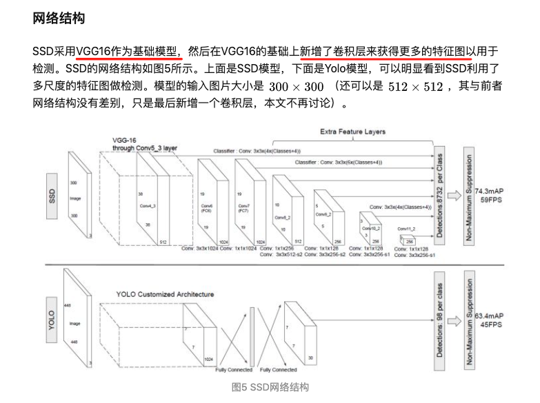

 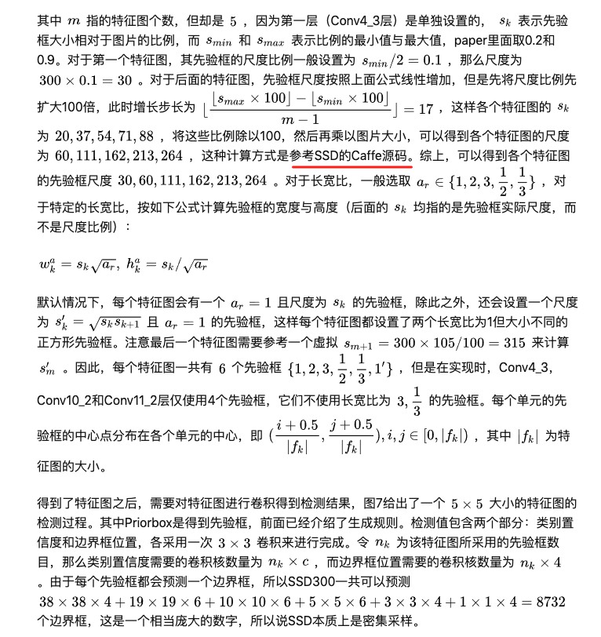
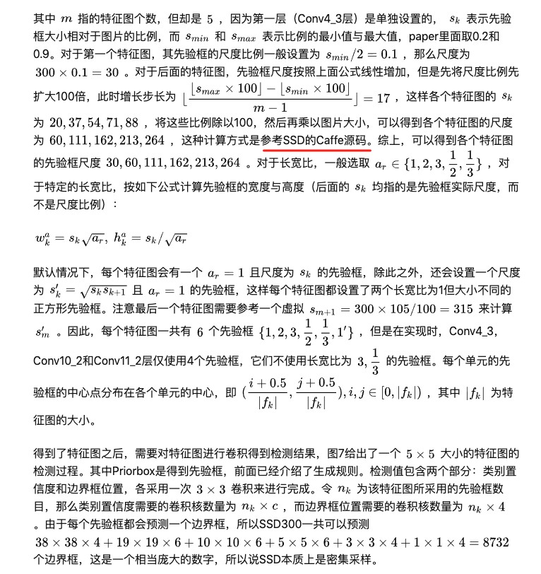

 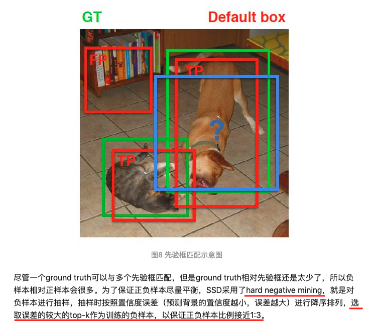
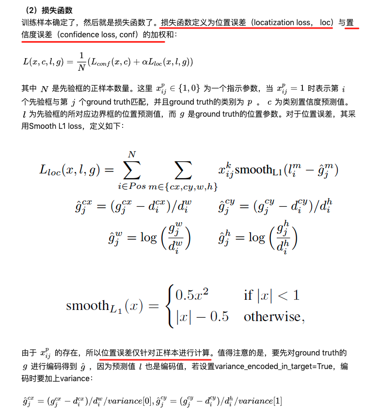
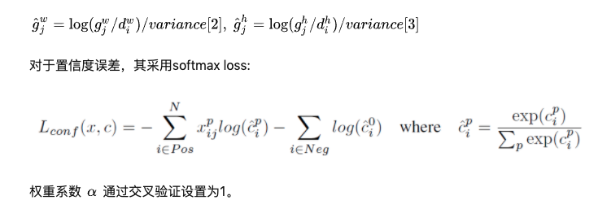
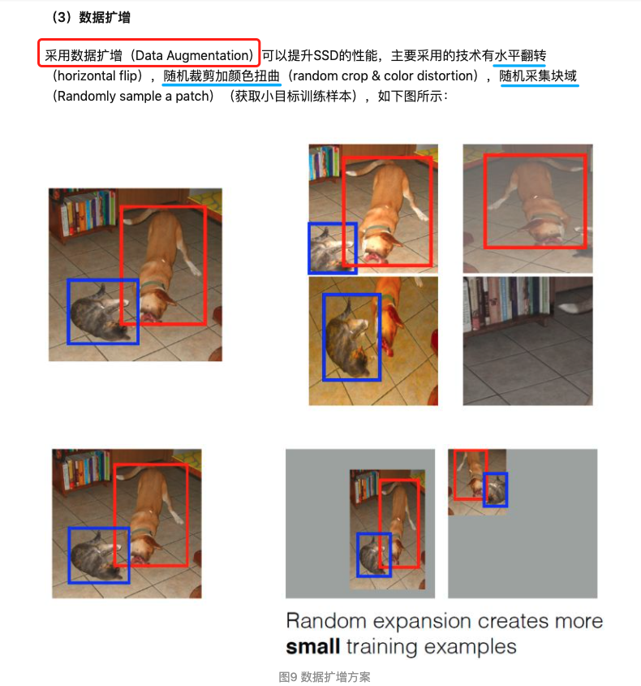
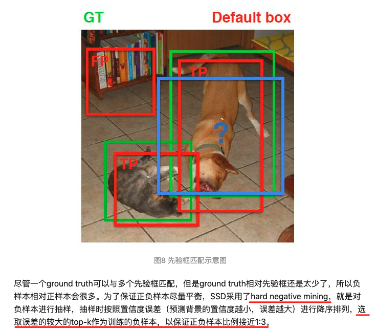
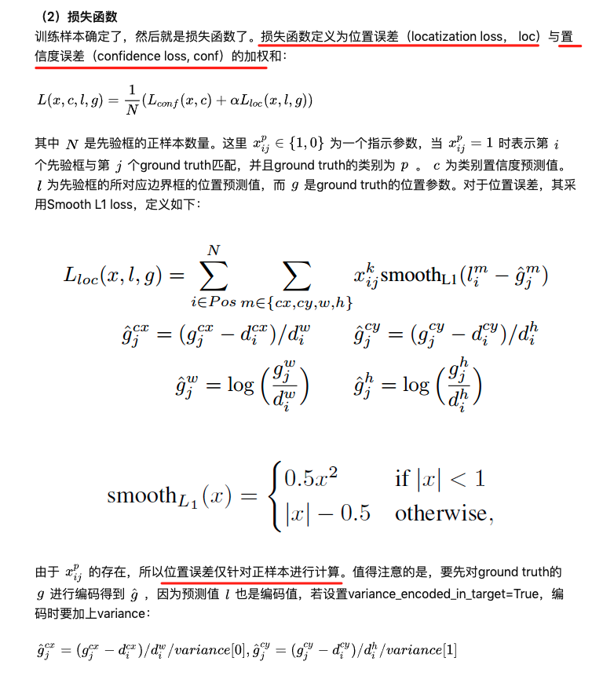
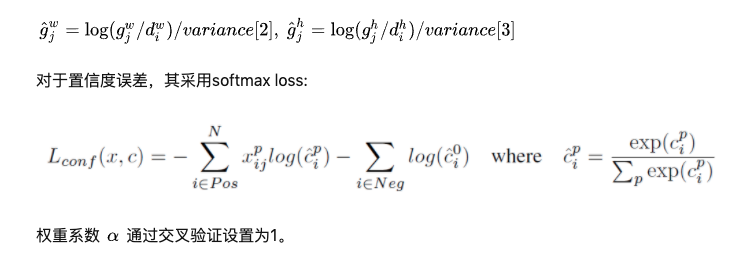
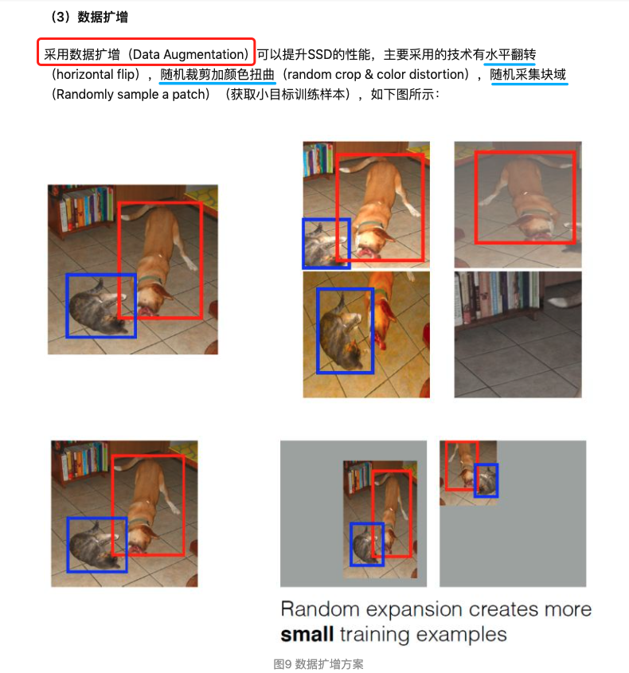


self.ssd_params = SSDParams(img_shape=(300, 300), # 输入图片大小
num_classes=21, # 类别数+背景
no_annotation_label=21,
feat_layers=["block4", "block7", "block8", "block9", "block10", "block11"], # 要进行检测的特征图name
feat_shapes=[(38, 38), (19, 19), (10, 10), (5, 5), (3, 3), (1, 1)], # 特征图大小
anchor_size_bounds=[0.15, 0.90], # 特征图尺度范围
anchor_sizes=[(21., 45.),
(45., 99.),
(99., 153.),
(153., 207.),
(207., 261.),
(261., 315.)], # 不同特征图的先验框尺度（第一个值是s_k，第2个值是s_k+1）
anchor_ratios=[[2, .5],
[2, .5, 3, 1. / 3],
[2, .5, 3, 1. / 3],
[2, .5, 3, 1. / 3],
[2, .5],
[2, .5]], # 特征图先验框所采用的长宽比（每个特征图都有2个正方形先验框）
anchor_steps=[8, 16, 32, 64, 100, 300], # 特征图的单元大小
anchor_offset=0.5, # 偏移值，确定先验框中心
normalizations=[20, -1, -1, -1, -1, -1], # l2 norm
prior_scaling=[0.1, 0.1, 0.2, 0.2] # variance
)
def _built_net(self):
"""Construct the SSD net"""
self.end_points = {} # record the detection layers output
self._images = tf.placeholder(tf.float32, shape=[None, self.ssd_params.img_shape[0],
self.ssd_params.img_shape[1], 3])
with tf.variable_scope("ssd_300_vgg"):
# original vgg layers
# block 1
net = conv2d(self._images, 64, 3, scope="conv1_1")
net = conv2d(net, 64, 3, scope="conv1_2")
self.end_points["block1"] = net
net = max_pool2d(net, 2, scope="pool1")
# block 2
net = conv2d(net, 128, 3, scope="conv2_1")
net = conv2d(net, 128, 3, scope="conv2_2")
self.end_points["block2"] = net
net = max_pool2d(net, 2, scope="pool2")
# block 3
net = conv2d(net, 256, 3, scope="conv3_1")
net = conv2d(net, 256, 3, scope="conv3_2")
net = conv2d(net, 256, 3, scope="conv3_3")
self.end_points["block3"] = net
net = max_pool2d(net, 2, scope="pool3")
# block 4
net = conv2d(net, 512, 3, scope="conv4_1")
net = conv2d(net, 512, 3, scope="conv4_2")
net = conv2d(net, 512, 3, scope="conv4_3")
self.end_points["block4"] = net
net = max_pool2d(net, 2, scope="pool4")
# block 5
net = conv2d(net, 512, 3, scope="conv5_1")
net = conv2d(net, 512, 3, scope="conv5_2")
net = conv2d(net, 512, 3, scope="conv5_3")
self.end_points["block5"] = net
print(net)
net = max_pool2d(net, 3, stride=1, scope="pool5")
print(net)
# additional SSD layers
# block 6: use dilate conv
net = conv2d(net, 1024, 3, dilation_rate=6, scope="conv6")
self.end_points["block6"] = net
#net = dropout(net, is_training=self.is_training)
# block 7
net = conv2d(net, 1024, 1, scope="conv7")
self.end_points["block7"] = net
# block 8
net = conv2d(net, 256, 1, scope="conv8_1x1")
net = conv2d(pad2d(net, 1), 512, 3, stride=2, scope="conv8_3x3",
padding="valid")
self.end_points["block8"] = net
# block 9
net = conv2d(net, 128, 1, scope="conv9_1x1")
net = conv2d(pad2d(net, 1), 256, 3, stride=2, scope="conv9_3x3",
padding="valid")
self.end_points["block9"] = net
# block 10
net = conv2d(net, 128, 1, scope="conv10_1x1")
net = conv2d(net, 256, 3, scope="conv10_3x3", padding="valid")
self.end_points["block10"] = net
# block 11
net = conv2d(net, 128, 1, scope="conv11_1x1")
net = conv2d(net, 256, 3, scope="conv11_3x3", padding="valid")
self.end_points["block11"] = net
# class and location predictions
predictions = []
logits = []
locations = []
for i, layer in enumerate(self.ssd_params.feat_layers):
cls, loc = ssd_multibox_layer(self.end_points[layer], self.ssd_params.num_classes,
self.ssd_params.anchor_sizes[i],
self.ssd_params.anchor_ratios[i],
self.ssd_params.normalizations[i], scope=layer+"_box")
predictions.append(tf.nn.softmax(cls))
logits.append(cls)
locations.append(loc)
return predictions, logits, locations
对于特征图的检测，这里单独定义了一个组合层ssd_multibox_layer，其主要是对特征图进行两次卷积，分别得到类别置信度与边界框位置：
# multibox layer: get class and location predicitions from detection layer
def ssd_multibox_layer(x, num_classes, sizes, ratios, normalization=-1, scope="multibox"):
pre_shape = x.get_shape().as_list()[1:-1]
pre_shape = [-1] + pre_shape
with tf.variable_scope(scope):
# l2 norm
if normalization > 0:
x = l2norm(x, normalization)
print(x)
# numbers of anchors
n_anchors = len(sizes) + len(ratios)
# location predictions
loc_pred = conv2d(x, n_anchors*4, 3, activation=None, scope="conv_loc")
loc_pred = tf.reshape(loc_pred, pre_shape + [n_anchors, 4])
# class prediction
cls_pred = conv2d(x, n_anchors*num_classes, 3, activation=None, scope="conv_cls")
cls_pred = tf.reshape(cls_pred, pre_shape + [n_anchors, num_classes])
return cls_pred, loc_pred
对于先验框，可以基于numpy生成，定义在ssd_anchors.py文件中，结合先验框与检测值，对边界框进行过滤与解码：
classes, scores, bboxes = self._bboxes_select(predictions, locations)
这里将得到过滤得到的边界框，其中classes, scores, bboxes分别表示类别，置信度值以及边界框位置。
基于训练好的权重文件在这里下载，这里对SSD进行测试： (https://link.zhihu.com/?target=https%3A//pan.baidu.com/s/1snhuTsT)
ssd_net = SSD()
classes, scores, bboxes = ssd_net.detections()
images = ssd_net.images()
sess = tf.Session()
# Restore SSD model.
ckpt_filename = './ssd_checkpoints/ssd_vgg_300_weights.ckpt'
sess.run(tf.global_variables_initializer())
saver = tf.train.Saver()
saver.restore(sess, ckpt_filename)
img = cv2.imread('./demo/dog.jpg')
img = cv2.cvtColor(img, cv2.COLOR_BGR2RGB)
img_prepocessed = preprocess_image(img) # 预处理图片，主要是归一化和resize
rclasses, rscores, rbboxes = sess.run([classes, scores, bboxes],
feed_dict={images: img_prepocessed})
rclasses, rscores, rbboxes = process_bboxes(rclasses, rscores, rbboxes) # 处理预测框，包括clip,sort,nms
plt_bboxes(img, rclasses, rscores, rbboxes) # 绘制检测结果
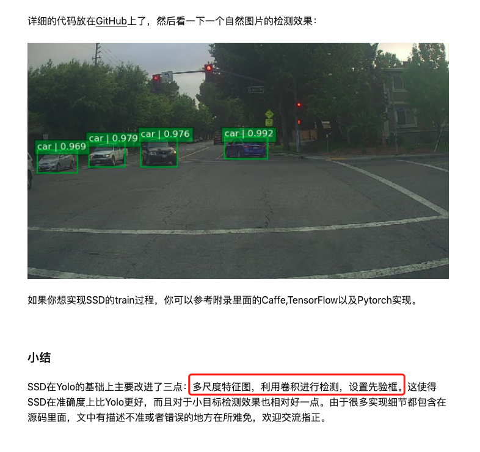
 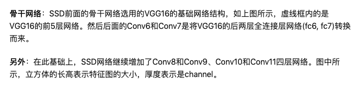
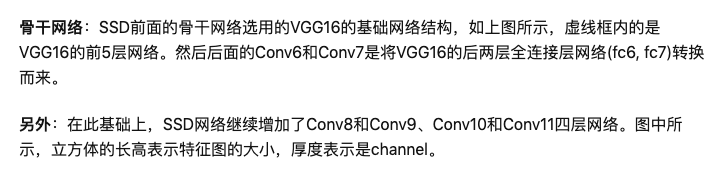
 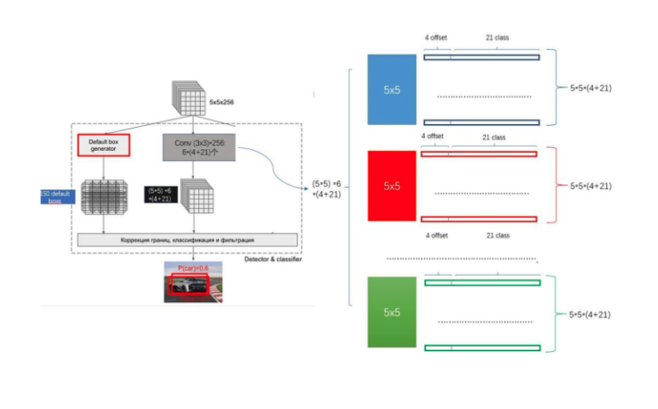
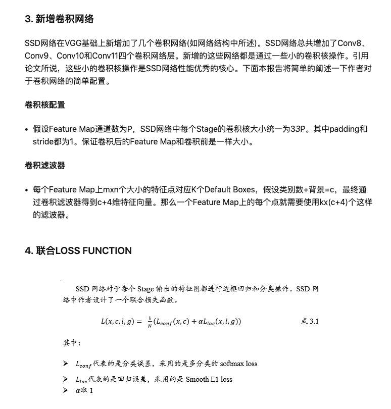
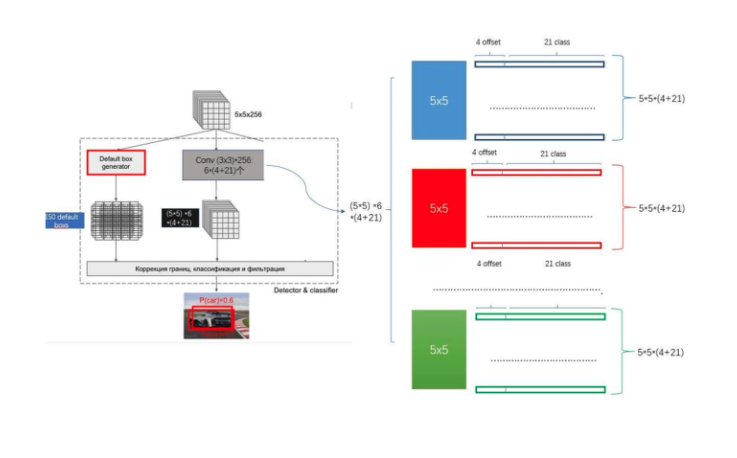
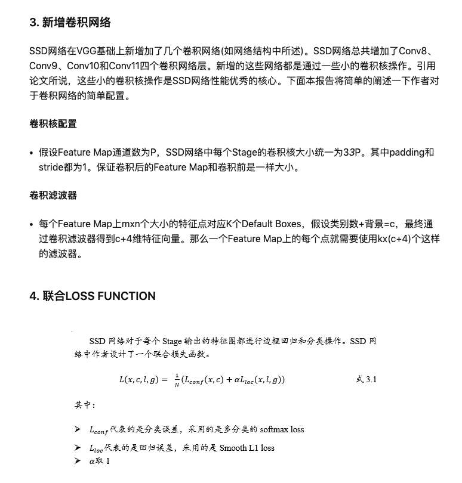
 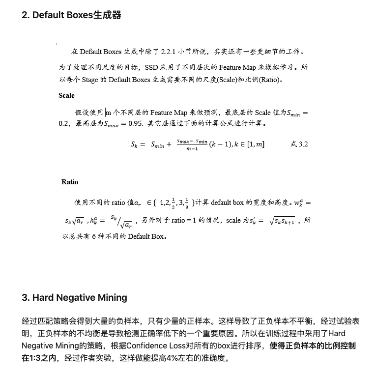
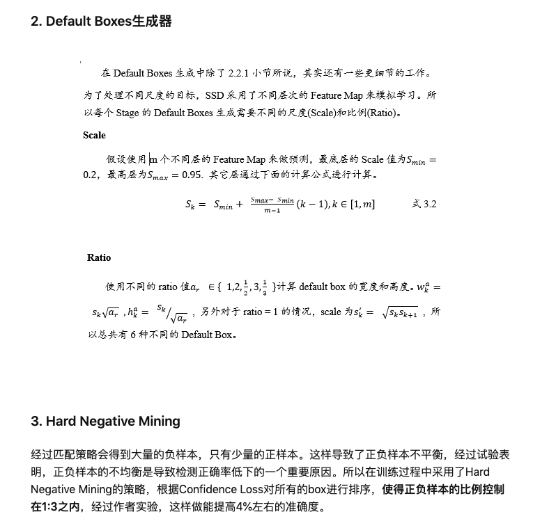